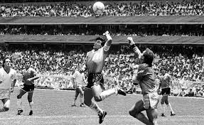

Historia del Fútbol

¡Descubre la fascinante historia del deporte más popular del mundo y genera más interés!
La historia del fútbol es rica y compleja, remontándose a varias culturas antiguas que practicaban juegos con características similares. Sin embargo, el fútbol moderno tiene sus raíces en Inglaterra durante el siglo XIX.
### Orígenes antiguos
- *China*: Uno de los primeros antecedentes del fútbol es el "Cuju", un juego practicado durante la dinastía Han (206 a.C. - 220 d.C.), donde los jugadores pateaban una bola de cuero rellena con plumas.
- *Grecia y Roma*: Los griegos jugaban "Episkyros" y los romanos "Harpastum", juegos que involucraban patear y transportar una pelota.
### Desarrollo en Inglaterra
El fútbol tal como lo conocemos hoy comenzó a tomar forma en las escuelas y universidades inglesas en el siglo XIX.
- *1848*: Se redactaron las "Reglas de Cambridge", una de las primeras normativas escritas del fútbol.
- *1863*: Se fundó la Football Association (FA) en Inglaterra, unificando diversas reglas locales y estableciendo el primer conjunto de reglas estándar. Este evento es crucial porque marcó la separación definitiva del rugby, que también estaba ganando popularidad en la época.